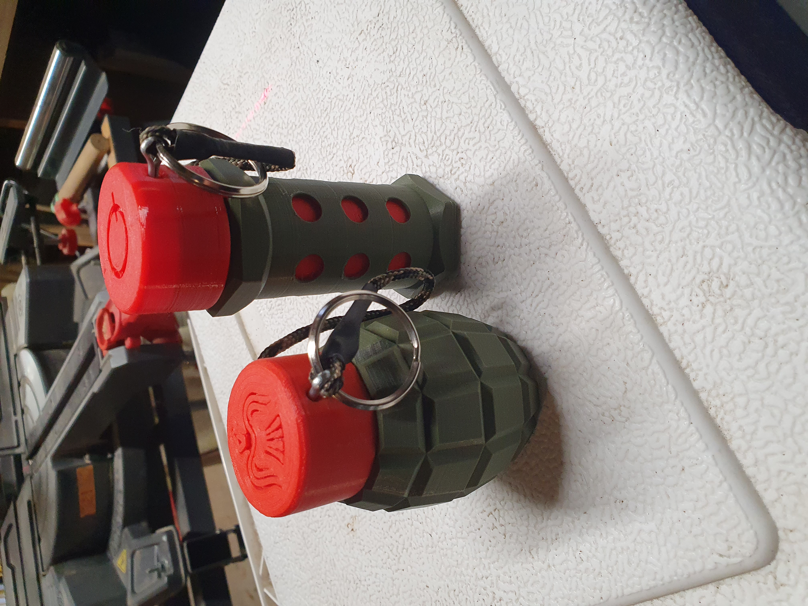

Q-Prop Creations
Sound Grenade
My third prop was this sound grenade, designed to fit the specific limitations of our field where Pyro and percussive grenades were not permitted. These electronic grenades resemble a Mk2 pineapple grenade, although not enough to get you in trouble with law enforcement. When you pull the pin there is a quick arming beep, followed by a four second delay before the longer detonation beeps. Reinsert the pin and the grenade is ready to go again.

